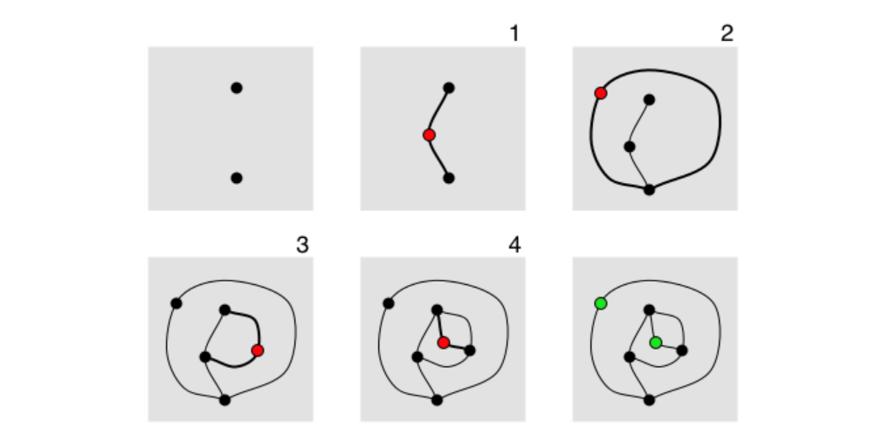
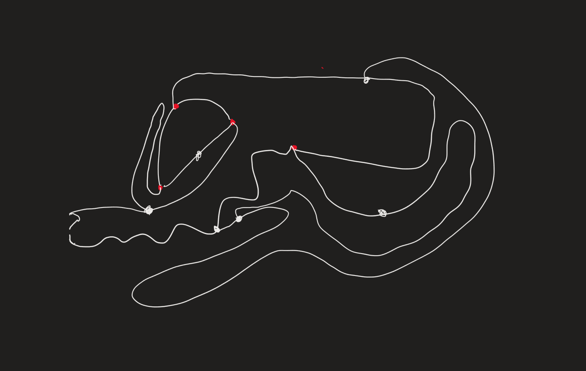
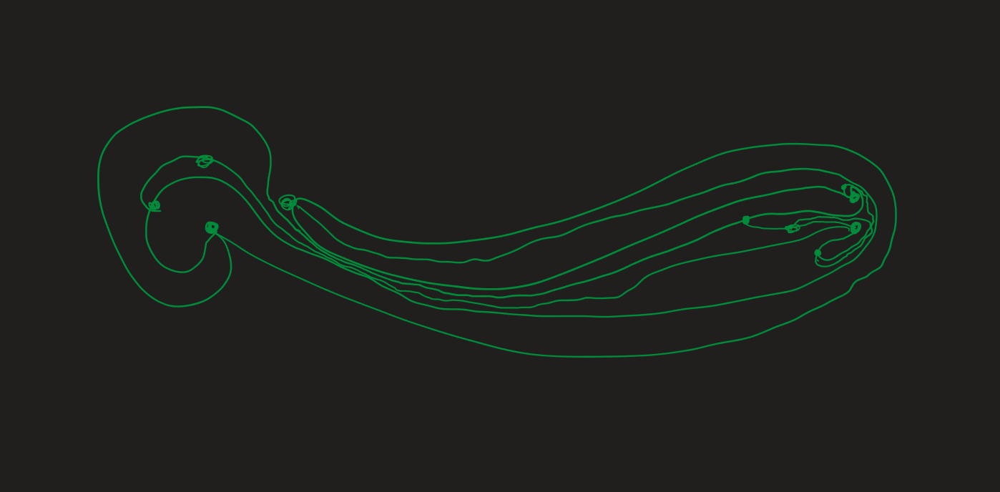
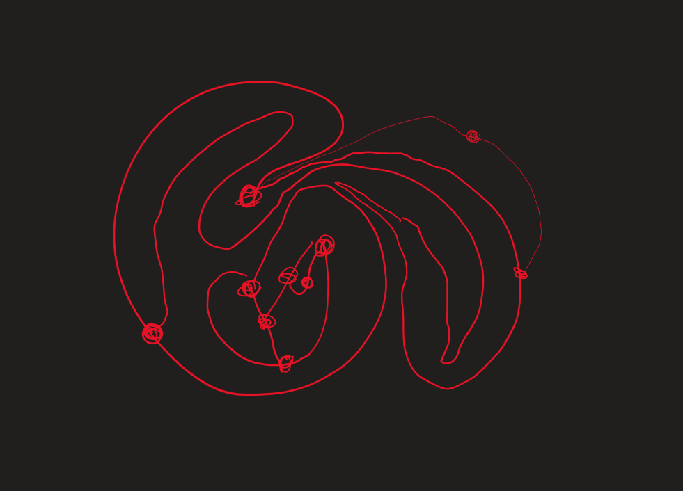
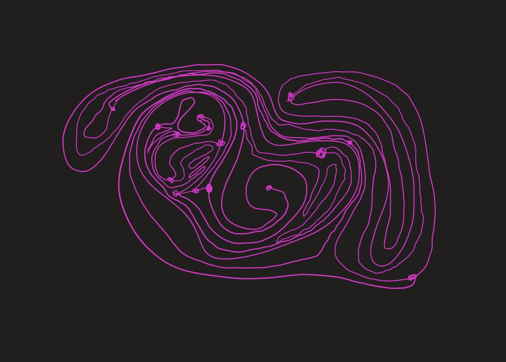
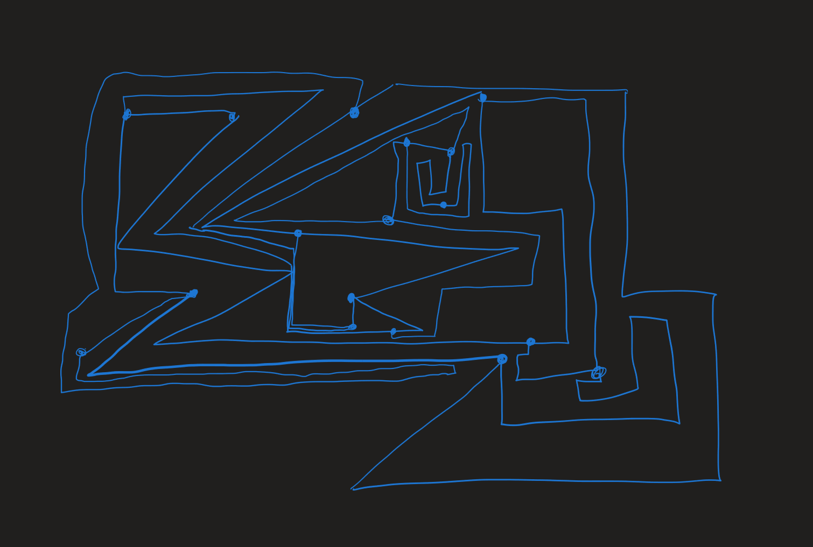
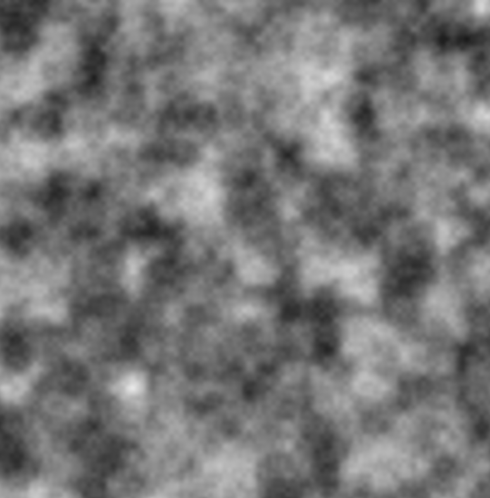

GENCG Working Journal - Day 1 - Physical Games
The module started off with an introduction to the topic of generative
computergraphics. In order to warm up we did a physical game called
Sprouts Game.

The idea is that two players play against each other by connecting
points on a paper. There are multiple rules that constrain the players
ability to choose which points he wants to connect. All rules can be
found in the linked article above. Here are the outcomes of my games
against my opponent.





I was quite astonished about the maths and logical backgrounds behind
this very simple game. I read the whole article on my busdrive home but
skipped the concrete interpreatations of the maths. I didn't quite
figure it out but i have a strong feeling that depending on the number
of starting points the player who starts either tends to win or loose
the game. Similar to the game Tic Tac Toe. If both
players understand the logic behind the game, the number of starting
points defines if the starting player wins or looses. But that's just a
theory which I can't confirm at the moment :)
In the afternoon we were free to start developing some digital work. I
decided to go with the task to draw a map of an imaginary place and
combined it with some warming up in the P5JS library. I wanted to do a
basic 2D perlin noise grayscale map.

It reminds me a bit of an thermal camera from a flying drone over some
unknown territory, so I tried to make the noise move from right to left.